물류관리사-2교시 (2020-07-18 기출문제)
1과목: 보관하역론
1. 보관의 기능에 관한 설명으로 옳지 않은 것은?
- 재화의 물리적 보존과 관리 기능
- 제품의 거리적, 장소적 효용을 높이는 기능
- 운송과 배송을 원활하게 하는 기능
- 생산과 판매와의 조정 또는 완충 기능
- 집산, 분류, 구분, 조합, 검사의 장소적 기능
(정답률: 49%)

2. 보관의 원칙에 관한 설명으로 옳은 것을 모두 고른 것은?
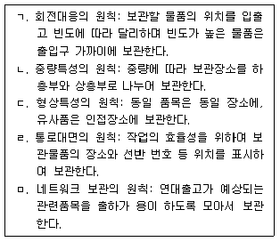
- ㄱ, ㄴ, ㄷ
- ㄱ, ㄴ, ㄹ
- ㄱ, ㄴ, ㅁ
- ㄴ, ㄷ, ㅁ
- ㄷ, ㄹ, ㅁ
(정답률: 31%)
3. 하역에 관한 설명으로 옳지 않은 것은?
- 운송 및 보관에 수반하여 발생하는 부수작업을 총칭한다.
- 화물에 대한 시간적 효용과 장소적 효용 창출을 지원한다.
- 물류기술의 발달로 인해 노동집약적인 물류활동이 자동화 및 무인화로 진행되고 있다.
- 하역은 항만, 공항, 철도역 등 다양한 장소에서 수행되고 있으나 운송과 보관을 연결하는 기능은 갖고 있지 않다.
- 생산에서 소비까지 전 유통과정에서 발생하는 하역작업의 합리화는 물류합리화에 중요한 요소이다.
(정답률: 57%)
4. 하역의 기본원칙이 아닌 것을 모두 고른 것은?
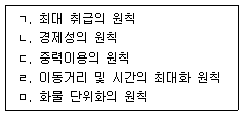
- ㄱ, ㄴ
- ㄱ, ㄹ
- ㄴ, ㄷ
- ㄴ, ㅁ
- ㄷ, ㅁ
(정답률: 50%)
5. 다음이 설명하는 컨테이너 하역작업 용어는?
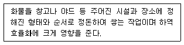
- 래싱(Lashing)
- 배닝(Vanning)
- 디배닝(Devanning)
- 스태킹(Stacking)
- 더니징(Dunnaging)
(정답률: 50%)
6. 하역 기계화에 관한 설명으로 옳지 않은 것은?
- 하역 분야는 물류활동 중에서 가장 기계화수준이 높으며, 인력의존도가 낮은 분야이다.
- 파렛트화에 의한 하역 기계화는 주로 물류비의 절감을 위하여 도입한다.
- 하역 기계화 효과를 높이기 위해서는 물동량과 인건비 수준을 고려하여 도입해야한다.
- 액체 및 분립체 등 인력으로 하기 힘든 화물의 경우 기계화 필요성은 더욱 증대된다.
- 하역 기계화를 촉진하기 위해서는 하역기기의 개발과 정보시스템을 통합한 하역 자동화시스템 구축이 필요하다.
(정답률: 56%)
7. 항공화물 탑재방식에 관한 설명으로 옳지 않은 것은?
- 살화물 탑재방식은 개별화물을 항공전용 컨테이너에 넣은 후 언로더(Unloader)를 이용하여 탑재하는 방식이다.
- 살화물 탑재방식은 단시간에 집중적으로 작업해야 하는 화물탑재에 적합한 방식이다.
- 살화물 탑재방식에서는 트랙터(Tractor)와 카고 카트(Cargo Cart)가 주로 사용된다.
- 파렛트 탑재방식은 기본적인 항공화물 취급 방법이며, 파렛트화된 화물을 이글루(Igloo)로 씌워서 탑재하는 방식이다.
- 컨테이너 탑재방식은 항공기 내부구조에 적합한 컨테이너를 이용하여 탑재하는 방식이다.
(정답률: 26%)
8. 크레인에 관한 설명으로 옳지 않은 것은?
- 크레인은 천정크레인(Ceiling Crane), 갠트리크레인(Gantry Crane), 집크레인(Jib Crane), 기타 크레인 등으로 구분된다.
- 갠트리크레인은 레일 위를 주행하는 방식이 일반적이나, 레일 대신 타이어로 주행하는 크레인도 있다.
- 스태커크레인(Stacker Crane)은 고층랙 창고 선반에 화물을 넣고 꺼내는 크레인의 총칭이다.
- 언로더(Unloader)는 천정에 설치된 에이치빔(H-beam)의 밑 플랜지에 전동 체인 블록 등을 매단 구조이며, 소규모 하역작업에 널리 이용되고 있다.
- 집크레인은 고정식과 주행식이 있으며, 아파트 등의 건설공사에도 많이 쓰이고 수평방향으로 더 넓은 범위 안에서 작업할 수 있다.
(정답률: 41%)
9. ICD(Inland Container Depot)에서 수행하는 기능이 아닌 것으로만 짝지어진 것은?
- 마샬링(Marshalling), 본선 선적 및 양화
- 마샬링(Marshalling), 통관
- 본선 선적 및 양화, 장치보관
- 장치보관, 집화분류
- 집화분류, 통관
(정답률: 44%)
10. 복합화물터미널에 관한 설명으로 옳은 것을 모두 고른 것은?
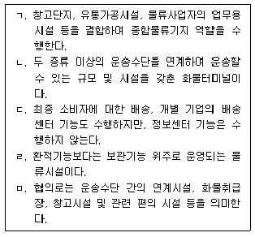
- ㄱ, ㄴ, ㄹ
- ㄱ, ㄴ, ㅁ
- ㄱ, ㄷ, ㅁ
- ㄴ, ㄷ, ㄹ
- ㄷ, ㄹ, ㅁ
(정답률: 61%)
11. 물류시설 및 물류단지에 관한 설명으로 옳지 않은 것은?
- CY(Container Yard)는 수출입용 컨테이너를 보관ㆍ취급하는 장소이다.
- CFS(Container Freight Station)는 컨테이너에 LCL(Less than Container Load) 화물을 넣고 꺼내는 작업을 하는 시설과 장소이다.
- 지정장치장은 통관하고자 하는 물품을 일시 장치하기 위해 세관장이 지정하는 구역이다.
- 통관을 하지 않은 내국물품을 보세창고에 장치하기 위해서는 항만법에 근거하여 해당 지방자치단체장의 허가를 받아야 한다.
- CFS(Container Freight Station)와 CY(Container Yard)는 부두 외부에도 위치할 수 있다.
(정답률: 45%)
12. 크로스도킹(Cross Docking)에 관한 설명으로 옳지 않은 것은?
- 물류센터를 화물의 흐름 중심으로 운영할 수 있다.
- 물류센터의 재고관리비용은 낮추면서 재고수준을 증가시킬 수 있다.
- 배송리드타임을 줄일 수 있어서 공급사슬 효율성을 높일 수 있다.
- 기본적으로 즉시 출고될 물량을 입고하여 보관하지 않고 출고하는 방식으로 운영한다.
- 공급업체가 미리 분류ㆍ포장하는 기포장방식과 물류센터에서 분류ㆍ출고하는 중간 처리방식으로 운영한다.
(정답률: 50%)
13. 다음이 설명하는 물류관련 용어는?
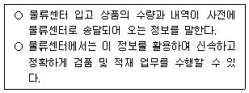
- ASN(Advanced Shipping Notification)
- ATP(Available To Promise)
- EOQ(Economic Order Quantity)
- BOM(Bill Of Material)
- POS(Point Of Sale)
(정답률: 39%)
14. 자동화창고의 구성요소에 관한 설명으로 옳지 않은 것은?
- 버킷(Bucket)은 화물의 입출고 및 보관에 사용되는 상자이다.
- 셀(Cell)은 랙 속에 화물이 저장되는 단위공간을 의미한다.
- 스태커크레인(Stacker Crane)은 승강장치, 주행장치, 포크장치로 구분된다.
- 이중명령(Dual Command) 시 스태커크레인은 입고작업과 출고작업을 동시에 실행한다.
- 트래버서(Traverser)는 화물을 지정된 입출고 지점까지 수직으로 이동시키는 자동 주행장치이다.
(정답률: 48%)
15. 자동화창고에 관한 설명으로 옳지 않은 것은?
- 단위화 및 규격화된 물품 보관으로 효율적인 재고관리가 가능하다.
- 물류의 흐름보다는 보관에 중점을 두고 설계해야 한다.
- 고단적재가 가능하여 단위면적당 보관효율이 좋다.
- 자동화시스템으로 운영되므로 생산성과 효율성을 개선할 수 있다.
- 설비투자에 자금이 소요되므로 신중한 준비와 계획이 필요하다.
(정답률: 60%)
16. 창고관리시스템(WMS: Warehouse Management System)의 도입효과에 관한 설명으로 옳지 않은 것은?
- 입고관리, 출고관리, 재고관리 등의 업무를 효율적으로 지원한다.
- 설비 활용도와 노동 생산성을 높이며, 재고량과 재고 관련비용을 증가시킨다.
- 재고 투명성을 높여 공급사슬의 효율을 높여준다.
- 수작업으로 수행되는 입출고 업무를 시스템화하여 작업시간과 인력이 절감된다.
- 전사적자원관리시스템(ERP: Enterprise Resource Planning)과 연계하여 정보화의 범위를 확대할 수 있다.
(정답률: 56%)
17. 유닛로드(Unit Load)와 관련이 없는 것은?
- 일관파렛트화(Palletization)
- 프레이트 라이너(Freight Liner)
- 호퍼(Hopper)
- 컨테이너화(Containerization)
- 협동일관운송(Intermodal Transportation)
(정답률: 54%)
18. 다음 표는 A회사의 공장들과 주요 수요지들의 위치좌표를 나타낸 것이다. 수요지1의 월별 수요는 200톤이며 수요지2의 월별 수요는 300톤, 수요지3의 월별 수요는 200톤이다. 공장1의 월별 공급량은 200톤이며 공장2의 월별 공급량은 500톤이다. 새롭게 건설할 A회사 물류센터의 최적 입지좌표를 무게 중심법으로 구하라. (단, 소수점 둘째자리에서 반올림함)
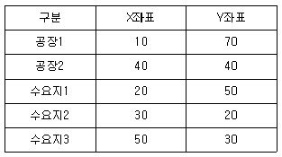
- X: 24.2, Y: 32.1
- X: 28.6, Y: 40.0
- X: 28.6, Y: 40.7
- X: 32.1, Y: 40.0
- X: 32.1, Y: 42.6
(정답률: 33%)
19. 4가지 제품을 보관하는 창고의 기간별 저장소요공간이 다음 표와 같을 때, (ㄱ)임의위치저장(Randomized Storage)방식과 (ㄴ)지정위치저장(Dedicated Storage)방식으로 각각 산정된 창고의 저장소요공간은?
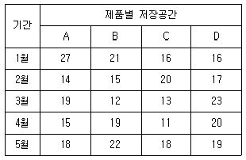
- (ㄱ) 74, (ㄴ) 92
- (ㄱ) 80, (ㄴ) 80
- (ㄱ) 80, (ㄴ) 86
- (ㄱ) 80, (ㄴ) 92
- (ㄱ) 92, (ㄴ) 80
(정답률: 36%)
20. 자동창고시스템에서 AS/RS(Automated Storage/Retrieval System)장비의 평균가동률은 95 %이며, 단일명령(Single Command) 수행시간은 2분, 이중 명령(Dual Command) 수행시간은 3.5분이다. 단일명령 횟수가 이중명령 횟수의 3배라면 AS/RS 장비 1대가 한 시간에 처리하는 화물의 개수는? (단, 소수점 첫째자리에서 반올림함)
- 24 개
- 26 개
- 28 개
- 30 개
- 32 개
(정답률: 15%)
21. 유닛로드 시스템(ULS: Unit Load System)의 효과로 옳지 않은 것은?
- 하역의 기계화
- 화물의 파손방지
- 신속한 적재
- 운송수단의 회전율 향상
- 경제적 재고량 유지
(정답률: 52%)
22. 일관파렛트화(Palletization)의 이점이 아닌 것은?
- 물류현장에서 하역작업의 혼잡을 줄일 수 있다.
- 창고에서 물품의 운반관리를 용이하게 수행할 수 있다.
- 화물의 입고작업은 복잡하지만, 출고작업은 신속하게 할 수 있다.
- 기계화가 용이하여 하역시간을 단축할 수 있다.
- 파렛트에 적합한 운송수단의 사용으로 파손 및 손실을 줄일 수 있다.
(정답률: 58%)
23. 창고설계의 기본원칙이 아닌 것은?
- 직진성의 원칙
- 모듈화의 원칙
- 역행교차 회피의 원칙
- 물품 취급 횟수 최소화의 원칙
- 물품이동 간 고저간격 최대화의 원칙
(정답률: 49%)
24. 항공하역에서 사용하는 장비가 아닌 것은?
- 돌리(Dolly)
- 터그 카(Tug Car)
- 리프트 로더(Lift Loader)
- 파렛트 스케일(Pallet Scale)
- 스트래들 캐리어(Straddle Carrier)
(정답률: 50%)
25. 물류센터 KPI(Key Performance Indicator)에 관한 설명으로 옳지 않은 것은?
- 환경 KPI는 CO2 절감 등 환경측면의 공헌도를 관리하기 위한 지표이다.
- 생산성 KPI는 작업인력과 시간 당 생산성을 파악하여 작업을 개선하기 위한 지표이다.
- 납기 KPI는 수주부터 납품까지의 기간을 측정하여 리드타임을 증가시키기 위한 지표이다.
- 품질 KPI는 오납율과 사고율 등 물류품질의 수준을 파악하여 고객서비스 수준을 향상시키기 위한 지표이다.
- 비용 KPI는 작업마다 비용을 파악하여 물류센터의 물류비용을 감소시키기 위한 지표이다.
(정답률: 61%)
26. 물류센터의 보관 방식에 관한 설명으로 옳지 않은 것은?
- 평치저장(Block Storage): 창고 바닥에 화물을 보관하는 방법으로 소품종 다량 물품 입출고에 적합하며, 공간 활용도가 우수하다.
- 드라이브인랙(Drive-in Rack): 소품종 다량 물품 보관에 적합하고 적재공간이 지게차 통로로 활용되어 선입선출(先入先出)이 어렵다.
- 회전랙(Carrousel Rack): 랙 자체가 수평 또는 수직으로 회전하며, 중량이 가벼운 다품종 소량의 물품 입출고에 적합하다.
- 이동랙(Mobile Rack): 수동식 및 자동식이 있으며 다품종 소량 물품 보관에 적합하고 통로 공간을 활용하므로 보관효율이 높다.
- 적층랙(Mezzanine Rack): 천정이 높은 창고에 복층구조로 겹쳐 쌓는 방식으로 물품의 보관효율과 공간 활용도가 높다.
(정답률: 40%)
27. 물류센터의 소팅 컨베이어에 관한 설명으로 옳지 않은 것은?
- 슬라이딩슈방식(Sliding-shoe Type)은 반송면에 튀어나온 기구를 넣어 단위화물을 함께 이동시키면서 압출하는 방식으로 충격이 없어 정밀기기, 깨지기 쉬운 물건 등의 분류에 사용된다.
- 틸팅방식(Tilting Type)은 레일을 주행하는 트레이 및 슬라이드의 일부를 경사지게 하여 단위 화물을 활강시키는 방식으로 우체국, 통신판매 등에 사용된다.
- 저개식방식은 레일을 주행하는 트레이 등의 바닥면을 개방하여 단위화물을 방출하는 방식이다.
- 크로스벨트방식(Cross-belt Type)은 레일 위를 주행하는 연속된 캐리어에 장착된 소형 벨트 컨베이어를 레일과 교차하는 방향으로 구동시켜 단위화물을 내보내는 방식이다.
- 팝업방식(Pop-up Type)은 컨베이어 반송면의 아래에서 벨트, 롤러, 휠, 핀 등의 분기장치가 튀어나와 단위화물을 내보내는 방식으로, 하부면의 손상 및 충격에 약한 화물에도 적합하다.
(정답률: 40%)
28. 연간 영업일이 300일인 K도매상은 A제품의 안전재고를 250개에서 400개로 늘리면서 새로운 재주문점을 고려하고 있다. A제품의 연간수요는 60,000개이며 주문 리드타임은 3일이었다. 이때 새롭게 설정된 재주문점은?
- 400
- 600
- 900
- 1,000
- 1,200
(정답률: 31%)
29. ABC(Activity Based Costing)에 관한 설명으로 옳지 않은 것을 모두 고른 것은?
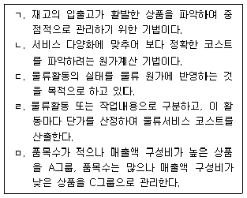
- ㄱ, ㅁ
- ㄱ, ㄷ, ㄹ
- ㄱ, ㄷ, ㅁ
- ㄴ, ㄷ, ㅁ
- ㄴ, ㄹ, ㅁ
(정답률: 15%)
30. 컨테이너터미널에서 사용되는 컨테이너 크레인에 관한 설명으로 옳지 않은 것은?
- 아웃리치(Out-reach)란 스프레더가 바다 쪽으로 최대로 진행되었을 때, 바다 측레일의 중심에서 스프레더 중심까지의 거리를 말한다.
- 백리치(Back-reach)란 트롤리가 육지 측으로 최대로 나갔을 때, 육지 측 레일의 중심에서 스프레더 중심까지의 거리를 말한다.
- 호이스트(Hoist)란 스프레더가 최대로 올라갔을 때 지상에서 스프레더 컨테이너코너 구멍 접촉면까지의 거리를 말한다.
- 타이다운(Tie-down)이란 크레인이 넘어졌을 때의 육지 측 레일의 중심에서 붐상단까지의 거리를 말한다.
- 헤드블록(Head Block)이란 스프레더를 달아매는 리프팅 빔으로서 아래 면에는 스프레더 소켓을 잡는 수동식 연결핀이 있으며 윗면은 스프레더 급전용 케이블이 연결되어 있다.
(정답률: 26%)
31. 어느 도매상점의 제품 A의 연간 수요량이 2,000개이고 제품당 단가는 1,000원이며, 연간 재고유지비용은 제품단가의 10 %이다. 1회 주문비용이 4,000원일 때 경제적주문량을 고려한 연간 총 재고비용은? (단, 총 재고비용은 재고 유지비용과 주문비용만을 고려함)
- 40,000원
- 50,000원
- 60,000원
- 70,000원
- 80,000원
(정답률: 34%)
32. 철도복합운송방식에 관한 설명으로 옳지 않은 것은?
- 피기백(Piggy-back)방식은 화물열차의 대차 위에 컨테이너를 적재한 트레일러나 트럭을 운송하는 방식과 컨테이너를 직접 철도 대차 위에 적재하여 운송하는 방식이 있다.
- COFC(Container On Flat Car)방식은 크레인이나 컨테이너 핸들러 등의 하역장비를 이용하여 적재하고 있다.
- TOFC(Trailer On Flat Car)방식은 COFC방식에 비하여 총중량이 적으며, 철도터미널에서의 소요공간이 적어 널리 사용되고 있다.
- 2단적 열차(Double Stack Train)는 한 화차에 컨테이너를 2단으로 적재하는 방식이다.
- 바이모달시스템(Bi-modal System)은 철도차륜과 도로 주행용 타이어를 겸비한 차량을 이용하여 철도에서는 화차로, 도로에서는 트레일러로 사용하는 방식이다.
(정답률: 46%)
33. 화인에 관한 설명으로 옳지 않은 것은?
- 화물작업의 편리성, 하역작업 시의 물품손상 예방 등을 위해 포장에 확실히 표시하는 것을 말한다.
- 주화인표시(Main Mark)는 수입업자 화인으로 수입업자의 머리문자를 도형 속에 표기하지 않고, 주소, 성명을 전체 문자로서 표시하는 것을 말한다.
- 부화인표시(Counter Mark)는 대조번호 화인으로서 생산자나 공급자의 약호를 붙여야 하는 경우에 표기한다.
- 원산지표시(Origin Mark)는 정상적인 절차에 의해 선적되는 모든 수출품을 대상으로 관세법에 따라 원산지명을 표시한다.
- 취급주의표시(Care Mark)는 화물의 취급, 운송, 적재요령을 나타내는 주의표시로서 일반화물 취급표시와 위험화물 경고표시로 구분된다.
(정답률: 46%)
34. 손소독제를 판매하는 K상사는 5월 판매량을 60,000개로 예측하였으나 실제로는 56,000개를 판매하였다. 6월의 실제 판매량이 66,000개일 경우 지수평활법에 의한 7월의 판매 예측량은? (단, 지수평활계수 α = 0.2를 적용함)
- 58,240개
- 58,860개
- 60,240개
- 60,560개
- 61,120개
(정답률: 40%)
35. 파렛트 집합적재방식에 관한 설명으로 옳지 않은 것을 모두 고른 것은?
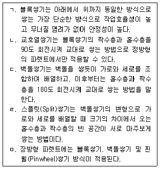
- ㄱ, ㄴ
- ㄱ, ㄹ
- ㄱ, ㅁ
- ㄴ, ㄷ
- ㄴ, ㅁ
(정답률: 30%)
36. 채찍효과(Bullwhip Effect)에 관한 설명으로 옳지 않은 것은?
- 채찍효과에 따른 부정적 영향을 최소화하기 위해서는 가격할인 등의 판매촉진 정책을 장려해야 한다.
- 공급사슬 내의 한 지점에서 직면하게 되는 수요의 변동성이 상류로 갈수록 증폭되는 현상을 의미한다.
- 채찍효과가 발생하는 원인으로는 부정확한 수요예측, 일괄주문처리 등이 있다.
- 조달기간이 길어지면 공급사슬 내에서 채찍효과가 커지게 된다.
- 공급사슬에서의 정보공유 등 전략적 파트너십을 구축하면 채찍효과에 효율적으로 대응할 수 있다.
(정답률: 50%)
37. A제품을 취급하는 K상점은 경제적주문량(EOQ)에 의한 제품발주를 통해 합리적인 재고관리를 추구하고 있다. A제품의 연간 수요량이 40,000개, 개당 가격은 2,000원, 연간 재고유지비용은 제품단가의 20 %, 1회 주문비용이 20,000원일 때 경제적주문량(EOQ)과 연간 최적 발주횟수는 각각 얼마인가?
- 1,600개, 20회
- 1,600개, 25회
- 2,000개, 20회
- 2,000개, 40회
- 4,000개, 10회
(정답률: 42%)
38. 안전재고에 관한 설명으로 옳지 않은 것은?
- 안전재고는 품절예방, 납기준수 및 고객서비스 향상을 위해 필요하다.
- 안전재고 수준을 높이면 재고유지비의 부담이 커진다.
- 공급업자가 제품을 납품하는 조달기간이 길어지면 안전재고량이 증가하게 된다.
- 고객수요가 임의의 확률분포를 따를 때 수요변동의 표준편차가 작아지면 제품의 안전재고량이 증가한다.
- 수요와 고객서비스를 고려하여 적정수준의 안전재고를 유지하면 재고비용이 과다하게 소요되는 것을 막을 수 있다.
(정답률: 55%)
39. 구매방식에 관한 설명으로 옳지 않은 것은?
- 집중구매방식(Centralized Purchasing Method)은 일반적으로 대량구매가 이루어지기 때문에 가격 및 거래조건이 유리하다.
- 분산구매방식(Decentralized Purchasing Method)은 사업장별 구매가 가능하여 각 사업장의 다양한 요구를 반영하기 쉽다.
- 집중구매방식(Centralized Purchasing Method)은 구매절차 표준화가 용이하며, 자재의 긴급조달에 유리하다.
- 분산구매방식(Decentralized Purchasing Method)은 주로 사무용 소모품과 같이 구매지역에 따라 가격 차이가 없는 품목의 구매에 이용된다.
- 집중구매방식(Centralized Purchasing Method)은 절차가 복잡한 수입물자 구매등에 이용된다.
(정답률: 53%)
40. A소매점에서의 제품판매에 관한 정보가 아래와 같을 때 가장 합리적인 안전재고 수준은? (단, Z(0.90) = 1.282, Z(0.95) = 1.645이며, 답은 소수점 둘째자리에서 반올림함)
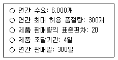
- 51.3
- 65.8
- 84.8
- 102.6
- 131.6
(정답률: 22%)
2과목: 물류관련법규
41. 물류정책기본법상 물류계획의 수립ㆍ시행에 관한 설명으로 옳지 않은 것은?
- 국토교통부장관 및 해양수산부장관은 국가물류정책의 기본방향을 설정하는 10년 단위의 국가물류기본계획을 5년마다 공동으로 수립하여야 한다.
- 국가물류기본계획에는 국가물류정보화사업에 관한 사항이 포함되어야 한다.
- 국토교통부장관은 국가물류기본계획을 수립하거나 변경한 때에는 관계 중앙행정기관의 장에게 통보하며, 관계 중앙행정기관의 장은 이를 시ㆍ도지사에게 통보하여야 한다.
- 국토교통부장관 및 해양수산부장관은 국가물류기본계획을 시행하기 위하여 연도별 시행계획을 매년 공동으로 수립하여야 한다.
- 특별시장 및 광역시장은 지역물류정책의 기본방향을 설정하는 10년 단위의 지역 물류기본계획을 5년마다 수립하여야 한다.
(정답률: 47%)
42. 물류정책기본법령상 국가물류정책위원회에 관한 설명으로 옳지 않은 것은?
- 국가물류정책에 관한 주요 사항을 심의하기 위하여 산업통상자원부장관 소속으로 국가물류정책위원회를 둔다.
- 국가물류정책위원회는 위원장을 포함한 23명 이내의 위원으로 구성한다.
- 공무원이 아닌 국가물류정책위원회 위원의 임기는 2년으로 하되, 연임할 수 있다.
- 국가물류정책위원회의 업무를 효율적으로 추진하기 위하여 분과위원회를 둘 수 있다.
- 국가물류정책위원회 전문위원의 임기는 3년 이내로 하되, 연임할 수 있다.
(정답률: 43%)
43. 물류정책기본법상 국제물류주선업에 관한 설명으로 옳은 것은?
- 국제물류주선업을 경영하려는 자는 국토교통부령으로 정하는 바에 따라 시ㆍ도지사에게 등록하여야 한다.
- 국제물류주선업 등록을 하려는 자는 2억원 이상의 자본금(법인이 아닌 경우에는 4억원 이상의 자산평가액을 말한다)을 보유하여야 한다.
- 거짓이나 그 밖의 부정한 방법으로 등록을 한 경우에는 국제물류주선업 등록을 취소하거나 6개월 이내의 기간을 정하여 사업의 전부 또는 일부의 정지를 명할수 있다.
- 국제물류주선업자가 사망한 때 상속인에게는 국제물류주선업의 등록에 따른 권리ㆍ의무가 승계되지 않는다.
- 국제물류주선업의 등록에 따른 권리ㆍ의무를 승계하려는 자는 국토교통부장관의 허가를 얻어야 한다.
(정답률: 42%)
44. 물류정책기본법상 물류관련협회에 관한 설명으로 옳은 것을 모두 고른 것은?
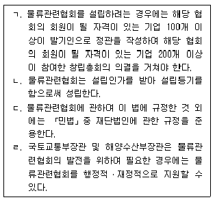
- ㄱ, ㄷ
- ㄴ, ㄹ
- ㄷ, ㄹ
- ㄱ, ㄴ, ㄹ
- ㄱ, ㄴ, ㄷ, ㄹ
(정답률: 42%)
45. 물류정책기본법에 따른 행정업무 및 조치에 관한 설명으로 옳지 않은 것은?
- 국토교통부장관ㆍ해양수산부장관 및 산업통상자원부장관의 업무소관이 중복되는 경우에는 서로 협의하여 업무소관을 조정한다.
- 국제물류주선업자에게 사업의 정지를 명하여야 하는 경우로서 그 사업의 정지가 해당 사업의 이용자 등에게 심한 불편을 주는 경우에는 그 사업정지처분을 갈음하여 1천만원 이하의 과징금을 부과할 수 있다.
- 과징금을 기한 내에 납부하지 아니한 때에는 시ㆍ도지사는 「지방재정법」에 따라 징수한다.
- 국제물류주선업자에 대한 등록을 취소하려면 청문을 하여야 한다.
- 이 법에 따라 업무를 수행하는 위험물질운송단속원은 「형법」제129조부터 제132조까지의 규정에 따른 벌칙의 적용에서는 공무원으로 본다.
(정답률: 38%)
46. 물류정책기본법상 위반행위자에 대한 벌칙 혹은 과태료의 상한이 중한 것부터 경한 순서로 바르게 나열한 것은?
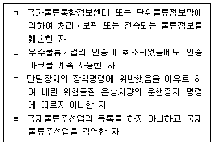
- ㄱ - ㄷ - ㄴ - ㄹ
- ㄱ - ㄹ - ㄷ - ㄴ
- ㄷ - ㄱ - ㄹ - ㄴ
- ㄹ - ㄱ - ㄴ - ㄷ
- ㄹ - ㄷ - ㄴ - ㄱ
(정답률: 34%)
47. 물류정책기본법상 물류체계의 효율화에 관한 설명으로 옳지 않은 것은?
- 국토교통부장관은 효율적인 물류활동을 위하여 필요한 물류시설 및 장비를 확충할 것을 물류기업에 명할 수 있다.
- 해양수산부장관은 효율적인 물류활동을 위하여 필요한 물류시설 및 장비의 확충에 필요한 행정적ㆍ재정적 지원을 할 수 있다.
- 시ㆍ도지사는 물류공동화를 추진하는 물류기업이나 화주기업 또는 물류 관련 단체에 대하여 예산의 범위에서 필요한 자금을 지원할 수 있다.
- 산업통상자원부장관은 물류공동화를 확산하기 위하여 필요한 경우에는 시범지역을 지정하거나 시범사업을 선정하여 운영할 수 있다.
- 시ㆍ도지사는 물류공동화 촉진을 위한 조치를 하려는 경우에는 중복을 방지하기 위하여 미리 해당 조치와 관련하여 국토교통부장관ㆍ해양수산부장관 또는 산업통상자원부장관과 협의하여야 한다.
(정답률: 34%)
48. 물류정책기본법령상 물류정보화에 관한 설명으로 옳지 않은 것은?
- 국토교통부장관ㆍ해양수산부장관ㆍ산업통상자원부장관 또는 관세청장은 물류정보화를 통한 물류체계의 효율화를 위하여 필요한 시책을 강구하여야 한다.
- 단위물류정보망은 물류정보의 수집ㆍ분석ㆍ가공 및 유통 등을 촉진하기 위하여 구축ㆍ운영된다.
- 「한국토지주택공사법」에 따른 한국토지주택공사는 단위물류정보망 전담기관으로 지정될 수 있다.
- 국토교통부장관, 해양수산부장관, 시ㆍ도지사 및 행정기관은 단위물류정보망 전담기관에 대한 지정을 취소하려면 청문을 하여야 한다.
- 단위물류정보망 전담기관이 시설장비와 인력 등의 지정기준에 미달하게 된 경우에는 그 지정을 취소하여야 한다.
(정답률: 35%)
49. 물류시설의 개발 및 운영에 관한 법령상 지원시설에 해당하지 않는 것은?
- 교육ㆍ연구 시설
- 선상수산물가공업시설
- 단독주택ㆍ공동주택 및 근린생활시설
- 물류단지의 종사자의 생활과 편의를 위한 시설
- 「건축법 시행령」별표 1 제5호에 따른 문화 및 집회시설
(정답률: 37%)
50. 물류시설의 개발 및 운영에 관한 법령상 물류시설개발종합계획의 수립에 관한 설명으로 옳은 것은?
- 국토교통부장관은 물류시설개발종합계획을 10년 단위로 수립하여야 한다.
- 물류시설개발종합계획에는 용수ㆍ에너지ㆍ통신시설 등 기반시설에 관한 사항이 포함되어야 하는 것은 아니다.
- 국토교통부장관은 물류시설개발종합계획 중 물류시설별 물류시설용지면적의 100분의 5 이상으로 물류시설의 수요ㆍ공급계획을 변경하려는 때에는 물류시설분과 위원회의 심의를 거쳐야 한다.
- 국토교통부장관은 관계 기관에 물류시설개발종합계획을 수립하는 데에 필요한 자료의 제출을 요구할 수 있으나, 물류시설에 대하여 조사할 수는 없다.
- 관계 중앙행정기관의 장이 물류시설개발종합계획의 변경을 요청할 때에는 물류시설개발종합계획의 주요 변경내용에 관한 대비표를 국토교통부장관에게 제출하여야 한다.
(정답률: 44%)
51. 물류시설의 개발 및 운영에 관한 법률상 국토교통부장관이 복합물류터미널사업자의 등록을 취소하여야 하는 것을 모두 고른 것은?
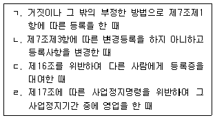
- ㄱ, ㄹ
- ㄴ, ㄷ
- ㄱ, ㄴ, ㄷ
- ㄱ, ㄷ, ㄹ
- ㄴ, ㄷ, ㄹ
(정답률: 44%)
52. 물류시설의 개발 및 운영에 관한 법령상 물류터미널사업에 관한 설명으로 옳지 않은 것은?
- 「한국농어촌공사 및 농지관리기금법」에 따른 한국농어촌공사는 복합물류터미널사업의 등록을 할 수 있는 자에 해당한다.
- 일반물류터미널사업을 경영하려는 자는 물류터미널 건설에 관하여 필요한 경우 국토교통부장관의 공사시행인가를 받아야 한다.
- 물류터미널 안의 공공시설 중 오ㆍ폐수시설 및 공동구를 변경하는 경우에는 인가권자의 변경인가를 받아야 한다.
- 복합물류터미널사업자는 복합물류터미널사업의 일부를 휴업하려는 때에는 미리 국토교통부장관에게 신고하여야 하며, 그 휴업기간은 6개월을 초과할 수 없다.
- 물류터미널을 건설하기 위한 부지 안에 있는 국가 또는 지방자치단체 소유의 토지로서 물류터미널 건설사업에 필요한 토지는 해당 물류터미널 건설사업 목적이 아닌 다른 목적으로 매각하거나 양도할 수 없다.
(정답률: 36%)
53. 물류시설의 개발 및 운영에 관한 법령상 일반물류단지의 지정에 관한 설명으로 옳지 않은 것은?
- 일반물류단지는 국토교통부장관이 지정하지만, 100만 제곱미터 이하의 일반물류단지는 관할 시ㆍ도지사가 지정한다.
- 시ㆍ도지사는 일반물류단지를 지정하려는 때에는 일반물류단지개발계획을 수립하여 관계 행정기관의 장과 협의한 후 지역물류정책위원회의 심의를 거쳐야 한다.
- 시ㆍ도지사는 일반물류단지를 지정할 때에는 일반물류단지개발계획과 물류단지 개발지침에 적합한 경우에만 일반물류단지를 지정하여야 한다.
- 일반물류단지개발계획에는 일반물류단지의 개발을 위한 주요시설의 지원계획이 포함되어야 한다.
- 중앙행정기관의 장은 일반물류단지의 지정이 필요하다고 인정하는 때에는 대상지역을 정하여 국토교통부장관에게 일반물류단지의 지정을 요청할 수 있으며, 이 경우 일반물류단지개발계획안을 작성하여 제출하여야 한다.
(정답률: 24%)
54. 물류시설의 개발 및 운영에 관한 법령상 물류단지개발지침에 관한 설명으로 옳지 않은 것은?
- 국토교통부장관은 물류단지개발지침을 작성하여 관보에 고시하여야 한다.
- 물류단지개발지침에는 문화재의 보존을 위하여 고려할 사항이 포함되어야 한다.
- 국토교통부장관은 물류단지개발지침을 작성할 때에는 미리 시ㆍ도지사의 의견을 듣고 관계 중앙행정기관의 장과 협의한 후 물류시설분과위원회의 심의를 거쳐야한다.
- 국토교통부장관은 물류단지개발지침에 포함되어 있는 토지가격의 안정을 위하여 필요한 사항을 변경할 때에는 물류시설분과위원회의 심의를 거쳐야 한다.
- 물류단지개발지침은 지역 간의 균형 있는 발전을 위하여 물류단지시설용지의 배분이 적정하게 이루어지도록 작성되어야 한다.
(정답률: 33%)
55. 물류시설의 개발 및 운영에 관한 법령상 특별법에 따라 설립된 법인인 시행자가 물류단지개발사업의 시행으로 새로 공공시설을 설치한 경우에는 종래의 공공시설은 시행자에게 무상으로 귀속되고 새로 설치된 공공시설은 그 시설을 관리할 국가 또는 지방자치단체에 무상으로 귀속되는 바, 이러한 공공시설에 해당하지 않는 것은?
- 방풍설비
- 공원
- 철도
- 녹지
- 공동구
(정답률: 31%)
56. 물류시설의 개발 및 운영에 관한 법령상 물류단지의 원활한 개발을 위하여 국가나 지방자치단체가 설치를 우선적으로 지원하여야 하는 기반시설에 해당하는 것을 모두 고른 것은?
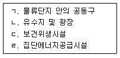
- ㄱ, ㄴ
- ㄱ, ㄴ, ㄹ
- ㄱ, ㄷ, ㄹ
- ㄴ, ㄷ, ㄹ
- ㄱ, ㄴ, ㄷ, ㄹ
(정답률: 31%)
57. 화물자동차 운수사업법상 운송주선사업자에 관한 설명으로 옳은 것은?
- 운송주선사업자는 운송 또는 주선 실적을 관리하고 국토교통부령으로 정하는 바에 따라 국토교통부장관의 승인을 받아야 한다.
- 운송주선사업자가 위ㆍ수탁차주에게 화물운송을 위탁하는 경우에는 운송가맹사업자의 화물정보망을 이용할 수 있다.
- 운송사업자로 구성된 협회, 운송주선사업자로 구성된 협회 및 운송가맹사업자로 구성된 협회는 그 공동목적을 달성하기 위하여 국토교통부령으로 정하는 바에 따라 공동으로 연합회를 설립하여야 한다.
- 부정한 방법으로 허가를 받고 화물자동차 운송주선사업을 경영한 자에 대하여는 500만원 이하의 과태료를 부과한다.
- 운송주선사업자는 주사무소 외의 장소에서 상주하여 영업하려면 국토교통부령으로 정하는 바에 따라 국토교통부장관에게 신고하고 영업소를 설치하여야 한다.
(정답률: 33%)
58. 화물자동차 운수사업법령상 적재물배상보험등에 관한 설명으로 옳지 않은 것은?
- 이사화물을 취급하는 운송주선사업자는 적재물배상보험등에 가입하여야 한다.
- 건축폐기물ㆍ쓰레기 등 경제적 가치가 없는 화물을 운송하는 차량으로서 국토교통부장관이 정하여 고시하는 화물자동차는 적재물배상보험등의 가입 대상에서 제외된다.
- 운송주선사업자의 경우 각 화물자동차별로 적재물배상보험등에 가입하여야 한다.
- 보험회사등은 적재물배상보험등에 가입하여야 하는 자가 적재물배상보험등에 가입하려고 하면 대통령령으로 정하는 사유가 있는 경우 외에는 적재물배상보험등의 계약의 체결을 거부할 수 없다.
- 이 법에 따라 화물자동차 운송사업을 휴업한 경우 보험회사등은 책임보험계약등의 전부 또는 일부를 해제하거나 해지할 수 있다.
(정답률: 36%)
59. 화물자동차 운수사업법령상 자가용 화물자동차의 사용에 관한 설명으로 옳은 것은?
- 특수자동차를 제외한 화물자동차로서 최대 적재량이 2.5톤 이상인 자가용 화물자동차는 사용신고대상이다.
- 자가용 화물자동차를 사용하여 화물자동차 운송사업을 경영한 경우 국토교통부장관은 6개월 이내의 기간을 정하여 그 자동차의 사용을 제한하거나 금지할 수 있다.
- 이 법을 위반하여 자가용 화물자동차를 유상으로 화물운송용으로 제공하거나 임대한 자에게는 1천만원 이하의 과태료를 부과한다.
- 시ㆍ도지사는 자가용 화물자동차를 무상으로 화물운송용으로 제공한 자를 수사기관에 신고한 자에 대하여 대통령령으로 정하는 바에 따라 포상금을 지급할 수 있다.
- 자가용 화물자동차로서 대통령령으로 정하는 화물자동차로 사용하려는 자는 국토교통부령으로 정하는 기준에 따라 시ㆍ도지사의 허가를 받아야 한다.
(정답률: 21%)
60. 화물자동차 운수사업법령상 화물자동차 휴게소의 건설사업 시행에 관한 설명으로 옳지 않은 것은?
- 「한국철도시설공단법」에 따른 한국철도시설공단은 화물자동차 휴게소 건설사업을 할 수 있는 공공기관에 해당하지 않는다.
- 화물자동차 휴게소 건설사업을 시행하려는 자는 사업의 명칭ㆍ목적, 사업을 시행하려는 위치와 면적 등 대통령령으로 정하는 사항이 포함된 건설계획을 수립하여야 한다.
- 화물자동차 휴게소의 건설 대상지역 및 시설기준은 국토교통부령으로 정한다.
- 「도로법」제10조에 따른 고속국도 또는 일반국도에 인접한 지역으로서 총중량 8톤 이상인 화물자동차의 일일 평균 교통량이 3천대 이상인 지역은 화물자동차 휴게소의 Σ건설 대상지역이다.
- 사업시행자는 건설계획을 수립한 때에는 이를 공고하고, 관계 서류의 사본을 20일 이상 일반인이 열람할 수 있도록 하여야 한다.
(정답률: 32%)
61. 화물자동차 운수사업법상 공제조합에 관한 규정 내용이다. ( )에 들어갈 내용을 바르게 나열한 것은?
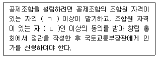
- ㄱ: 5분의 1, ㄴ: 50
- ㄱ: 5분의 1, ㄴ: 100
- ㄱ: 5분의 1, ㄴ: 200
- ㄱ: 10분의 1, ㄴ: 100
- ㄱ: 10분의 1, ㄴ: 200
(정답률: 30%)
62. 화물자동차 운수사업법령상 화물자동차 운송사업의 차량충당조건에 관한 설명으로 옳은 것은?
- 신규등록에 충당되는 화물자동차는 차령이 2년의 범위에서 대통령령으로 정하는 연한 이내여야 한다.
- 제작연도에 등록된 화물자동차의 차량충당 연한의 기산일은 제작연도의 말일이다.
- 부득이한 사유가 없는 한 대폐차 변경신고를 한 날부터 30일 이내에 대폐차하여야 한다.
- 대폐차의 절차 및 방법 등에 관하여 국토교통부령으로 규정한 사항 외에 필요한 세부사항은 국토교통부장관이 정하여 고시한다.
- 국토교통부장관은 차량충당조건에 대하여 2014년 1월 1일을 기준으로 5년마다 그 타당성을 검토하여 개선 등의 조치를 하여야 한다.
(정답률: 25%)
63. 화물자동차 운수사업법상 과징금에 관한 설명으로 옳지 않은 것은? (단, 권한위임에 관한 규정은 고려하지 않음)
- 국토교통부장관은 운송사업자에게 이 법에 의한 감차 조치를 명하여야 하는 경우에는 이를 갈음하여 과징금을 부과할 수 없다.
- 과징금을 부과하는 경우 그 액수는 총액이 1천만원 이하여야 한다.
- 과징금을 부과하려면 사업정지처분이 해당 화물자동차 운송사업의 이용자에게 심한 불편을 주거나 그 밖에 공익을 해칠 우려가 있어야 한다.
- 국토교통부장관은 과징금 부과처분을 받은 자가 과징금을 정한 기한에 내지 아니하면 국세 체납처분의 예에 따라 징수한다.
- 징수한 과징금은 법에서 정한 외의 용도로는 사용할 수 없다.
(정답률: 33%)
64. 화물자동차 운수사업법령상 운송사업자의 준수사항에 관한 설명으로 옳지 않은 것은?
- 최대적재량 B .5톤 이하의 화물자동차의 경우에는 주차장, 차고지 또는 지방자치단체의 조례로 정하는 시설 및 장소에서만 밤샘주차할 것
- 화주로부터 부당한 운임 및 요금의 환급을 요구받았을 때에는 환급할 것
- 「자동차관리법」에 따른 검사를 받지 아니하고 화물자동차를 운행하지 아니할 것
- 개인화물자동차 운송사업자의 경우 주사무소가 있는 특별시ㆍ광역시ㆍ특별자치시 또는 도와 맞닿은 특별시ㆍ광역시ㆍ특별자치시 또는 도에 상주하여 화물자동차 운송사업을 경영하지 아니할 것
- 화물자동차 운전자가 「도로교통법」을 위반해서 난폭운전을 하지 않도록 운행관리를 할 것
(정답률: 40%)
65. 화물자동차 운수사업법상 위ㆍ수탁계약에 관한 설명으로 옳은 것은? (단, 권한위임에 관한 규정은 고려하지 않음)
- 국토교통부장관은 해지된 위ㆍ수탁계약의 위ㆍ수탁차주였던 자가 감차 조치가 있는 날부터 6개월이 지난 후 임시허가를 신청하는 경우 3개월로 기간을 한정하여 허가할 수 있다.
- 임시허가를 받은 자가 허가 기간 내에 다른 운송사업자와 위ㆍ수탁계약을 체결하지 못하고 임시허가 기간이 만료된 경우 6개월 내에 임시허가를 신청할 수 있다.
- 국토교통부장관이 건전한 거래질서의 확립과 공정한 계약의 정착을 위하여 표준 위ㆍ수탁계약서를 고시한 경우에는 계약당사자의 위ㆍ수탁계약은 이에 따라야 한다.
- 운송사업자가 부정한 방법으로 변경허가를 받았다는 사유로 위ㆍ수탁차주의 화물자동차가 감차 조치를 받은 경우에는 해당 운송사업자와 위ㆍ수탁차주의 위ㆍ수탁계약은 해지된 것으로 본다.
- 위ㆍ수탁계약의 내용 중 일부에 대하여 당사자 간 이견이 있는 경우 계약내용을 일방의 의사에 따라 정함으로써 상대방의 정당한 이익을 침해한 경우에는 그 위ㆍ수탁계약은 전부 무효로 한다.
(정답률: 26%)
66. 화물자동차 운수사업법상 화물자동차 운송사업의 허가를 받을 수 없는 결격사유가 있는 자에 해당하는 것을 모두 고른 것은?
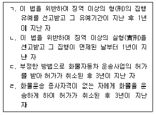
- ㄴ
- ㄱ, ㄷ
- ㄴ, ㄷ
- ㄱ, ㄴ, ㄹ
- ㄴ, ㄷ, ㄹ
(정답률: 14%)
67. 유통산업발전법령상 유통업상생발전협의회(이하 “협의회”라 함)에 관한 설명으로 옳은 것은?
- 협의회는 회장 1명을 포함한 9명 이내의 위원으로 구성한다.
- 해당 지역의 대ㆍ중소유통 협력업체ㆍ납품업체 등 이해관계자는 협의회의 위원이 될 수 없다.
- 협의회 위원의 임기는 3년으로 한다.
- 협의회의 회의는 재적위원 3분의 1 이상의 출석으로 개의하고, 출석위원 과반수이상의 찬성으로 의결한다.
- 협의회는 분기별로 1회 이상 개최하는 것을 원칙으로 한다.
(정답률: 32%)
68. 유통산업발전법상 중소유통공동도매물류센터에 대한 지원에 관한 설명이다. ( )에 들어갈 수 있는 내용을 바르게 나열한 것은?
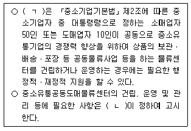
- ㄱ: 기획재정부장관, ㄴ: 산업통상자원부장관
- ㄱ: 산업통상자원부장관, ㄴ: 지방자치단체의 장
- ㄱ: 지방자치단체의 장, ㄴ: 중소벤처기업부장관
- ㄱ: 중소벤처기업부장관, ㄴ: 기획재정부장관
- ㄱ: 기획재정부장관, ㄴ: 중소벤처기업부장관
(정답률: 38%)
69. 유통산업발전법상 대규모점포의 등록결격사유가 있는 자로 옳지 않은 것은?
- 미성년자
- 피성년후견인
- 파산선고를 받고 복권된 후 3개월이 지난 자
- 이 법을 위반하여 징역의 실형을 선고받고 그 집행이 면제된 날부터 6개월이 지난 자
- 이 법을 위반하여 징역형의 집행유예선고를 받고 유예기간 중에 있는 자
(정답률: 34%)
70. 유통산업발전법령상 유통분쟁조정위원회(이하 “위원회”라 함)에 관한 설명으로 옳지 않은 것은?
- 위원회는 위원장 1명을 포함하여 11명 이상 15명 이하의 위원으로 구성한다.
- 유통분쟁조정신청을 받은 위원회는 신청일부터 7일 이내에 신청인외의 관련 당사자에게 분쟁의 조정신청에 관한 사실과 그 내용을 통보하여야 한다.
- 분쟁의 조정신청을 받은 위원회는 원칙적으로 조정신청을 받은 날부터 60일 이내에 이를 심사하여 조정안을 작성하여야 한다.
- 당사자가 조정안을 수락하고 조정서에 기명날인하거나 서명하였을 때에는 당사자 간에 조정서와 동일한 내용의 합의가 성립된 것으로 본다.
- 위원회는 동일한 시기에 동일한 사안에 대하여 다수의 분쟁조정이 신청된 경우에는 그 다수의 분쟁조정신청을 통합하여 조정할 수 있다.
(정답률: 33%)
71. 유통산업발전법상 지방자치단체의 장이 행정적ㆍ재정적 지원을 할 수 있는 대상으로 옳지 않은 것은?
- 재래시장의 활성화
- 전문상가단지의 건립
- 비영리법인의 판매사업 활성화
- 중소유통공동도매물류센터의 건립 및 운영
- 중소유통기업의 창업 지원 등 중소유통기업의 구조개선 및 경쟁력 강화
(정답률: 42%)
72. 항만운송사업법령상 타인의 수요에 응하여 하는 행위로서 항만운송에 해당하는 것은?
- 선박에서 발생하는 분뇨 및 폐기물의 운송
- 탱커선에 의한 운송
- 선박에서 사용하는 물품을 공급하기 위한 운송
- 선적화물을 싣거나 내릴 때 그 화물의 용적 또는 중량을 계산하거나 증명하는 일
- 「해운법」에 따른 해상여객운송사업자가 여객선을 이용하여 하는 여객운송에 수반되는 화물 운송
(정답률: 23%)
73. 항만운송사업법령상 2020년 6월 화물 고정 항만용역업에 채용된 甲이 받아야 하는 교육훈련에 관한 설명으로 옳은 것은?
- 화물 고정 항만용역작업은 안전사고가 발생할 우려가 높은 작업에 해당되지 않으므로 甲은 교육훈련의 대상이 아니다.
- 甲은 채용된 날부터 6개월 이내에 실시하는 신규자 교육훈련을 받아야 한다.
- 甲이 2020년 9월에 실시하는 신규자 교육훈련을 받는다면, 2021년에 실시하는 재직자 교육훈련은 면제된다.
- 甲이 최초의 재직자 교육훈련을 받는다면, 그 후 매 3년마다 실시하는 재직자교육훈련을 받아야 한다.
- 甲의 귀책사유 없이 교육훈련을 받지 못한 경우에도 甲은 화물 고정 항만용역 작업에 종사하는 것이 제한되어야 한다.
(정답률: 38%)
74. 항만운송사업법령상 항만운송 분쟁협의회(이하 “분쟁협의회”라 함)에 관한 설명으로 옳지 않은 것은?
- 분쟁협의회는 취급화물별로 구성ㆍ운영된다.
- 분쟁협의회는 위원장 1명을 포함하여 7명의 위원으로 구성한다.
- 분쟁협의회의 위원장은 위원 중에서 호선한다.
- 분쟁협의회의 위원에는 항만운송사업의 분쟁 관련 업무를 담당하는 공무원 중에서 해당 항만을 관할하는 지방해양수산청장 또는 시ㆍ도지사가 지명하는 사람이 포함된다.
- 분쟁협의회는 항만운송과 관련된 노사 간 분쟁의 해소에 관한 사항을 심의ㆍ의결 한다.
(정답률: 33%)
75. 철도사업법령상 철도사업자의 사업계획 변경에 관한 설명으로 옳지 않은 것은?
- 철도사업자는 여객열차의 운행구간을 변경하려는 경우에는 국토교통부장관에게 신고하여야 한다.
- 철도사업자는 사업용철도노선별로 여객열차의 정차역을 10분의 2 이상 변경하려는 경우에는 국토교통부장관의 인가를 받아야 한다.
- 국토교통부장관은 노선 운행중지, 감차 등을 수반하는 사업계획 변경명령을 받은 후 1년이 지나지 아니한 철도사업자의 사업계획 변경을 제한할 수 있다.
- 국토교통부장관은 사업의 개선명령을 받고 이를 이행하지 아니한 철도사업자의 사업계획 변경을 제한할 수 있다.
- 국토교통부장관이 지정한 날 또는 기간에 운송을 시작하지 아니한 철도사업자의 사업계획 변경에 대하여 국토교통부장관은 이를 제한할 수 있다.
(정답률: 25%)
76. 철도사업법령상 과징금처분에 관한 설명으로 옳지 않은 것은?
- 국토교통부장관이 사업정지처분을 갈음하여 철도사업자에게 부과하는 과징금은 1억원 이하이다.
- 과징금의 수납기관은 과징금을 수납한 때에는 지체 없이 그 사실을 국토교통부장관에게 통보하여야 한다.
- 과징금은 이를 분할하여 납부할 수 있다.
- 국토교통부장관은 과징금을 부과하고자 하는 때에는 그 위반행위의 종별과 해당 과징금의 금액 등을 명시하여 이를 납부할 것을 서면으로 통지하여야 한다.
- 국토교통부장관은 매년 10월 31일까지 다음 연도의 과징금 운용계획을 수립하여 시행하여야 한다.
(정답률: 39%)
77. 철도사업법령상 전용철도를 운영하는 자가 등록사항의 변경을 등록하지 않아 도 되는 사유에 해당하는 것을 모두 고른 것은?
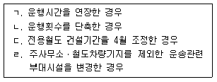
- ㄱ, ㄴ
- ㄷ, ㄹ
- ㄱ, ㄴ, ㄷ
- ㄴ, ㄷ, ㄹ
- ㄱ, ㄴ, ㄷ, ㄹ
(정답률: 24%)
78. 철도사업법령상 철도서비스 향상 등에 관한 설명으로 옳지 않은 것은?
- 국토교통부장관은 공정거래위원회와 협의하여 철도사업자 간 경쟁을 제한하지 아니하는 범위에서 우수 철도서비스에 대한 인증을 할 수 있다.
- 철도사업자의 신청에 의하여 우수철도서비스인증을 하는 경우에 그에 소요되는 비용은 예산의 범위 안에서 국토교통부가 부담한다.
- 철도서비스 평가업무 등을 위탁받은 자는 철도서비스의 평가 등을 할 때 철도사업자에게 관련 자료 또는 의견 제출 등을 요구할 수 있다.
- 철도사업자는 철도사업 외의 사업을 경영하는 경우에는 철도사업에 관한 회계와 철도사업 외의 사업에 관한 회계를 구분하여 경리하여야 한다.
- 철도사업자는 관련 법령에 따라 산출된 영업수익 및 비용의 결과를 회계법인의 확인을 거쳐 회계연도 종료 후 4개월 이내에 국토교통부장관에게 제출하여야 한다.
(정답률: 32%)
79. 농수산물 유통 및 가격안정에 관한 법령상 중도매인(仲都賣人)에 관한 설명으로 옳지 않은 것은?
- 중도매인의 업무를 하려는 자는 부류별로 해당 도매시장 개설자의 허가를 받아야 한다.
- 도매시장 개설자는 법인이 아닌 중도매인에게 중도매업의 허가를 하는 경우 3년이상 10년 이하의 범위에서 허가 유효기간을 설정할 수 있다.
- 중도매업의 허가를 받은 중도매인은 도매시장에 설치된 공판장에서는 그 업무를 할 수 없다.
- 해당 도매시장의 다른 중도매인과 농수산물을 거래한 중도매인은 농림축산식품부령 또는 해양수산부령으로 정하는 바에 따라 그 거래 내역을 도매시장 개설자에게 통보하여야 한다.
- 부류를 기준으로 연간 반입물량 누적비율이 하위 3퍼센트 미만에 해당하는 소량품목의 경우 중도매인은 도매시장 개설자의 허가를 받아 도매시장법인이 상장하지 아니한 농수산물을 거래할 수 있다.
(정답률: 38%)
80. 농수산물 유통 및 가격안정에 관한 법령상 경매사에 관한 설명으로 옳지 않은 것은?
- 도매시장법인은 2명 이상의 경매사를 두어야 한다.
- 경매사는 경매사 자격시험에 합격한 자 중에서 임명한다.
- 도매시장법인은 경매사가 해당 도매시장의 산지유통인이 된 경우 그 경매사를 면직하여야 한다.
- 도매시장법인이 경매사를 임면하면 도매시장 개설자에게 신고하여야 한다.
- 도매시장 개설자는 경매사의 임면 내용을 전국을 보급지역으로 하는 일간신문 또는 지정ㆍ고시된 인터넷 홈페이지에 게시하여야 한다.
(정답률: 26%)